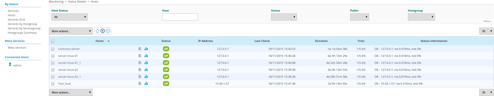
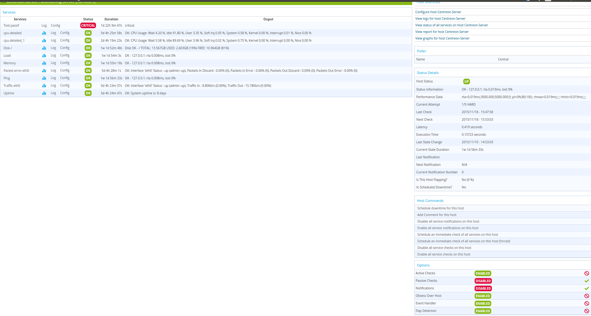

Realtime monitoring¶
The Monitoring menu can be used to view the evolution of the supervision of its information system in real time.
Object status¶
Statuses are indicators for the hosts or the services. Each status has a precise meaning for the object. To each status corresponds a code generated by the monitoring plugin according to thresholds defined by the user.
Host status¶
The table below summarises all the possible statuses for a host.
| Status | Exit code | Description |
|---|---|---|
| UP | 0 | The host is available and reachable |
| DOWN | 1 | The host is unavailable |
| UNREACHABLE | 2 | The host is unreachable |
Service status¶
The table below summarises all the possible statuses for a service.
| Status | Exit code | Description |
|---|---|---|
| OK | 0 | The service presents no problem |
| WARNING | 1 | The service has reached the warning threshold |
| CRITICAL | 2 | The service has reached the critical threshold |
| UNKNOWN | 3 | The status of the service cannot be checked (e.g.: SNMP agent down, etc.) |
Advanced statuses¶
In addition to the standard statuses, new statuses can be used to add additional information:
- The PENDING status is a status displayed for a service or a host freshly configured but which has not yet been checked by the scheduler.
- The UNREACHABLE status is a status indicating that the host (parental relationship) is situated downstream of a host with a DOWN status.
- The FLAPPING status is a status indicating that the status change percentage of the object is very high. This percentage is obtained from calculations performed by the network monitoring engine.
- The ACKNOWLEDGED status is a status indicating that the incident of the service or of the host has been taken into account by a user.
- The DOWNTIME status is a status indicating that the incident of the service or of the host occurred during a downtime period.
SOFT and HARD states¶
A host or a service can have two states:
- SOFT: Signifies that an incident has just been detected and that it has to be confirmed.
- HARD: Signifies that the status of the incident is confirmed. Once the status is confirmed, the notification process is engaged (sending of a mail, SMS, etc.).
Status confirmation¶
An incident (Not-OK status) is confirmed as of the moment when the number of validation attempts has reached its end. The configuration of an object (host or service) requires a regular check interval, a number of attempts to confirm a Not-OK status and an irregular check interval. As soon as the first incident is detected, the state is “SOFT” until its confirmation into “HARD”, triggering the notification process.
Example:
A service has the following check settings:
- Max check attempts: 3
- Normal check interval: 5 minutes
- Retry check interval: 1 minute
Let us imagine the following scenario:
- Instant t + 0: The service is checked, it has the OK status.
- Instant t + 5: The second check shows that the service has the CRITICAL status. The service goes into the SOFT state (attempt 1/3).
- Instant t + 6: The third check is performed, the service still has the CRITICAL status in SOFT (attempt 2/3).
- Instant t + 7: The fourth check shows that the service still has the CRITICAL status (attempt 3/3). The number of tests has been completed; the state is configured (HARD). The notification process is triggered.
- Instant t + 8: The service recovers OK status. It goes directly into the HARD state. The notification process is triggered.
- Instant t + 13: The service has the WARNING status. It goes into the SOFT state (attempt 1/3).
- Instant t + 14: The service still has the WARNING status (attempt 2/3).
- Instant t + 15: The service has the CRITICAL status. It remains in the SOFT state because it has changed status.
Generic actions¶
By default, during viewing of statuses of hosts or services, the monitoring data is refreshed automatically (15 seconds by default). Nevertheless, several icons can be used to check the refreshing of the data. The table below summarises the functions of these icons:
| Icon | Description |
|---|---|
 |
Serves to refresh the results manually. |
 |
Serves to put the automatic data refreshment into pause. |
 |
Serves to restart automatic data refreshment. |
Hosts¶
Viewing¶
To view the status of hosts, go into the menu Monitoring ==> Status Details ==> Hosts
You can use filter to adapt the view.
- To view the hosts with a problem but not acknowledged, choose Unhandled Problems in Host Status filter.
- To view all the hosts with a problem, choose Host Problems in Host Status filter.
- To view all the hosts, choose All in Host Status filter.
- To view the hosts classified by host groups, click on Hostgroups Summary

Host tables¶
The table below gives a description of all the columns of the table displayed when viewing hosts:
| Column name | Description |
|---|---|
| S | Displays the severity level of the host. |
| Hosts | Displays the name of the host.
The icon  indicates that the notifications for this host are disabled.
The icon indicates that the notifications for this host are disabled.
The icon  can be used to view all the performance graphs for this host. can be used to view all the performance graphs for this host. |
| Status | Serves to view the status of the host. |
| IP Address | Indicates the IP address of the host. |
| Last Check | Displays the date and the time of the last check. |
| Duration | Displays the time that the host a has kept its current status. |
| Hard State Duration | Displays the time that the host a has kept its current hard state (does not appear when viewing of all the hosts). |
| Tries | Displays the number of tries before confirming the state. |
| Status information | Displays the message explaining the status of the host. |
Note
The severity column and the associated filter appear if at least one object displayed has a severity level.
Available filters¶
You can filter the result presented via the following filters:
- Host: can be used to filter by name of host via an SQL LIKE type search.
- Status: can be used to filter by the status of hosts.
- Severity: can be used to filter by severity.
- Poller: can be used to filter the hosts by poller. Only the hosts of the poller selected will be displayed.
- Hostgroup: can be used to filter by host group. Only the hosts of the host group selected will be displayed.
Note
The search on text fields only starts after entry of at least 3 characters.
Host groups table¶
The table below gives a description of all the columns of the table displays when of the viewing host groups:
| Column name | Description |
|---|---|
| Host Group | List of available groups of hosts. |
| Hosts Status | Allows to display the number of hosts in UP, DOWN, UNREACHABLE or in PENDING status. |
| Services Status | Allows to display the number of services in OK, WARNING, CRITICAL or in PENDING status. |
Available filters¶
You can filter result by selecting poller in the select box. Only hosts monitored by poller will be displayed.
Host details¶
When you click on a host, the following screen appears:
Services¶
Here is the listing of all services linked to the host.
Status details¶
The table below summarizes the attributes of this part:
| Attributes | Description |
|---|---|
| Host Status | Displays the status of the host. |
| Status information | Displays the information of the status of the host. |
| Performance Data | Displays performance data associated to the check. |
| Current Attempt | Displays the number of attempts before status validation. |
| State Type | Displays the type of state (‘SOFT’ or ‘HARD’). |
| Last Check | Displays the last check of the host. |
| Next Check | Displays the next scheduled check of the host. |
| Latency | Displays the latency in seconds between the scheduled check and the real check execution. |
| Execution Time | Displays the execution time of the check. |
| Last State Change | Displays when the status of the host changed. |
| Current State Duration | Displays the date and time from which the host is in the present state. |
| Last Notification | Displays the sent date and time of the last notification. |
| Next Notification | Displays the sent date and time of the next notification. |
| Current Notification Number | Displays the number of sent notifications. |
| Is This Host Flapping? | Indicates if the host is in flapping state. |
| Percent State Change | Displays the percentage change of state. |
| In Scheduled Downtime? | Indicates if the host is in scheduled downtime. |
| Last Update | Displays the date and time of the last information update. |
Options and controls available¶
Options and controls allow you to perform a number of actions on the host. Options are described in the chapter Exploitation guide.
Host Shortcuts¶
You have here direct action to the host :
- Configure host xxxx : Allows to access to host’s configuration page
- View logs for host xxxx : Allows to display host’s event logs
- View status of all services on host xxxx : Allows to display all the status of services linked to the host
- View report for host xxxx : Allows to display host’s availability reporting
- View graphs for host xxxx : Allows to display performance graphs of all services of the host
Links¶
The Links container allows to display the hostgroups linked to the host.
Notifications¶
The Notifications container allows to display the contacts and contactgroups linked to the host which will receive notifications.
Services¶
Viewing¶
To view the status of hosts, go into the menu Monitoring ==> Services Grid.

The grey search bar can be used to filter the result displays. You can use filter to adapt the view.
- To view the services problems but not acknowledged, choose Unhandled Problems in Service Status filter
- To view all the services in non-OK status, choose Service Problems in Service Status filter
- To view all the services, choose All in Service Status filter
- To view all services (short by host) in any status, click on Services Grid and choose for Diplay Details

- To view the number of services (short by host and by status), click on Services Grid and choose for Diplay Summary

- To view the all services (short by host’s groups) in any status, click on Services by Hostgroup and choose for Diplay Details
- To view the number of services (short by host’s groups), click on Services by Hostgroup and choose for Diplay Summary

- To view the all services (short by services’ groups), click on Services by Servicegroup and choose for Diplay Details

- To view the number of services (short by services’ groups), click on Services by Servicegroup and choose for Diplay Summary

- To view the meta services, click on Meta Services
Services’ table¶
The table below gives a description of all the columns of the table displayed when viewing services:
| Column name | Description |
|---|---|
| S | Displays the severity level of the service. |
| Host | Displays the name of host. The  icon allows to access to host’s page details. icon allows to access to host’s page details. |
| Services | Displays the name of service. The icon indicates that notifications are disabled for this service.
The icon Allows to display performance graphs of the service.
The icon allows to access to service’s page details. |
| Duration | Displays the duration of the actual status. |
| Last Check | Displays the date and time of the last check. |
| Tries | Displays the number of attempts before status validation. |
| Status information | Displays the message explaining the status of the service. |
Note
The severity column and the associated filter appear if at least one object displayed has a severity level.
Note
The Hard State Duration doesn’t appear in All Services menu.
Tables of objects’ groups¶
The table below gives a description of all the columns of the table of services sorted by groups:
| Column name | Description |
|---|---|
| Host or Host Groups Hosts or Service Group Hosts | Allows to display hosts or hosts linked to hostgroups or hosts linked to servicegroups.
The  icon allows to display all services linked to the host.
The icon allows to display all performance graphs of services linked to the host. icon allows to display all services linked to the host.
The icon allows to display all performance graphs of services linked to the host. |
| Status | Displays the status of the host. |
| Services information | Displays the status of services (details mode) or the number of services classified by status (summary mode). |
Meta Services’ table¶
The table below gives a description of all the columns of the table of meta services:
| Column name | Description |
|---|---|
| Meta Services | Displays the name of the meta service. The icon allows to display performance graphs linked to the meta service. |
| Status | Displays the status of the meta service. |
| Duration | Displays the duration of the actual status. |
| Last Check | Displays the date and time of the last check. |
| Tries | Displays the number of attempts before status validation. |
| Status information | Displays the message explaining the status of the service. |
Service details¶
When you click on a service, the following screen appears:

Status details¶
The table below summarizes the attributes of this part:
| Attributes | Description |
|---|---|
| Service Status | Displays the status of the service. |
| Status information | Displays the information of the status of the service. |
| Extended status information | Displays long output of the service. |
| Performance Data | Displays performance data associated to the check. |
| Current Attempt | Displays the number of attempts before status validation. |
| State Type | Displays the type of state (‘SOFT’ or ‘HARD’). |
| Last Check Type | Indicates if the last type of check is ‘active’ or ‘passive’. |
| Last Check | Displays the last check of the service. |
| Next Scheduled Active Check | Displays the next scheduled check of the service. |
| Latency | Displays the latency in seconds between the scheduled check and the real check execution. |
| Check Duration | Displays the execution time of the check. |
| Last State Change | Displays when the status of the service changed. |
| Current State Duration | Displays the date and time from which the host is in the present state. |
| Last Service Notification | Displays the sent date and time of the last notification. |
| Current Notification Number | Displays the number of sent notifications. |
| Is This Service Flapping? | Indicates if the service is in flapping state. |
| Percent State Change | Displays the percentage change of state. |
| In Scheduled Downtime? | Indicates if the host is in scheduled downtime. |
| Last Update | Displays the date and time of the last information update. |
Options and controls available¶
Options and controls allow you to perform a number of actions on the host. Options are described in the chapter Exploitation guide.
Detailed graph and status graph¶
The Detailed Graph and Status Graph allow to display performance graphs and the history chart statutes for this service.
Host Shortcuts¶
The host shortcuts are the same than as those from host’s details page.
Service Shortcut¶
You have here direct action to the service :
- Configure service : Allows to access to service’s configuration page
- View logs for service xxxx : Allows to display services event logs
- View report for service xxxx : Allows to display service’s availability reporting
Links¶
The Links container allows to display:
- The groups of hosts which this service is linked.
- The groups of services which this service is linked.
- The categories of services which this service is linked.
Notifications¶
The Notifications container allows to display the contacts and contactgroups linked to the host which will receive notifications.
Monitoring Engine¶
This part allows to display information about monitoring scheduling queue, comments or downtimes of objects.
Note
For more information about comments and downtimes please see Exploitation guide chapter.
Downtime¶
To visualize downtimes:
- Go to the menu Monitoring ==> Downtimes ==> Downtimes

The table below gives a description of all the columns:
| Column name | Description |
|---|---|
| Host Name | Indicates the name of host. |
| Services | Indicates the name of service. |
| Start Time and End Time | Displays the start and end date and time. |
| Duration | Displays the duration of the downtime. |
| Author | Displays the name of user who set the downtime. |
| Comments | Displays the comments linked to the downtime. |
| Started | Indicates if the downtime is started or not. |
| Fixed | Indicates if the start and end datetime if fixe or not. |
Available filters¶
You can filter the result presented via the following filters:
- Host: can be used to filter by name of host via an SQL LIKE type search.
- Service: can be used to filter by name of service via an SQL LIKE type search.
- Output: can be used to filter by output of services.
- Author: can be used to filter by author.
- Display Finished Downtime: allows to display recurring finished downtime.
- Display Downtime Cycle: allows to display recurring downtime.
Note
The search on text fields only begins entering the third character.
Comments¶
To visualize comments:
- Go to the menu Monitoring ==> Downtimes ==> Comments
The table below gives a description of all the columns:
| Column name | Description |
|---|---|
| Host Name | Indicates the name of host. |
| Services (only available of services page) | Indicates the name of service. |
| Entry Time | Displays the date and time when comment had been written. |
| Author | Displays the name of user who set the comment. |
| Comments | Displays the content of the comment. |
| Persistent | Indicates if the comment is persistent when the monitoring engine restarts. |
Available filters¶
You can filter the result presented via the following filters:
- Host: can be used to filter by name of host via an SQL LIKE type search.
- Service: can be used to filter by name of service via an SQL LIKE type search.
- Output: can be used to filter by output of services.
Note
The search on text fields only begins entering the third character.